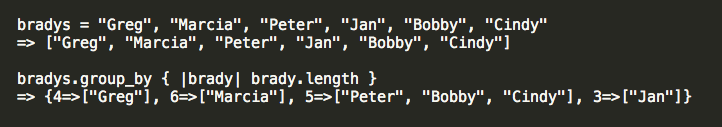

Ruby's Enumerable module provides a set of methods to search, sort, and transform collections.
I'm going to focus on the group_by method. This method does exactly what you might expect it to do. It splits a collection into groups based on given criteria. It can be used on arrays and hashes.
To use this method, you need a block with the criteria by which the items in the collection will be grouped. The result will be a hash. Eash hash key represents a group. Each key's corresponding value is an array holding the members of the group. Some examples might make things clearer.
When used on an array, group_by checks through (iterates through) the array and passes each element to the block. The resulting value of the block is the group in which the element belongs.
Here, each Brady child's name (represented by brady) is passed to the block . The block looks at the length of each brady name. The result is each group with the names that belong to it based on length.
In this example, the numbers 0 through 12 (represented by number) are passed to the block . The block looks at the remainder of each number when divided by 4. The resulting hash has four groups with keys 0 to 3. Key 1 Group holds numbers that when divided by 4 have remainder of 1. Key 2 Group holds numbers that when divided by 4 have remainder of 2. Key 3 Group holds numbers that when divided by 4 have remainder of 3. Key 0 Group holds numbers that are evenly divisible by 4 (remainder of 0).
When used as a hash, group_by passes each key/value pair to the block.